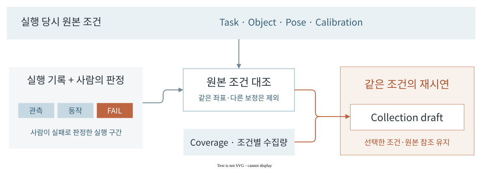
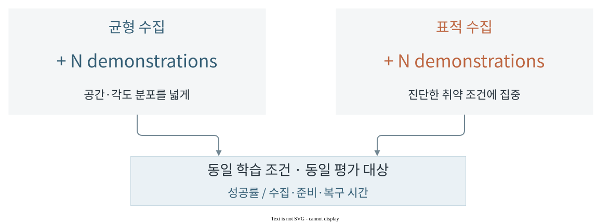

구현 원리
과거 기록과 현재 조건의 결합
현재 작업·장비·물체·보정 조건에 맞는 성공 시연을 집계해 수집 현황을 파악한다.

추천 선택에서 실행 계획으로
비교 가능한 관측의 분리
같은 녹화는 한 번만 센다. 현재 조건과 맞고 작업 판정이 PASS인 시연을 집계하며, 나머지는 제외 이유를 남긴다.
현재 위치에서 시작하는 수집안
현재 물체 위치를 유지한 채 횟수와 seed로 다음 위치·각도를 생성한다. Pick & Place는 작업영역 사이의 순서를 함께 정한다.
Collection Operator에서 추천을 요청하면 기존 수집 기록을 찾아 현재 조건과 비교한다. 선택한 추천은 현재 ASSISTED 작업 초안에 반영한다. 계획을 확정할 때 같은 원본·장면·설정을 다시 읽고, 실제 생성된 위치·회전각·표본화 조건이 선택한 추천과 일치하는지 대조한다.
추천과 실제 실행 계획이 서로 다른 조건을 사용하지 않도록 하는 연결이다. 사용자가 수정한 직접 입력·고정 조건은 유지하며, 오래된 추천은 현재 초안을 덮어쓰지 못한다. 추천 적용과 계획 생성은 구현됐으며, 실제 재수집·정책 개선 효과는 실행·평가 근거로 확인한다.
기록 탐색·추천 선택·계획 생성 구현 ↗기존 계획의 갱신
미관측 조건의 첫 수집
계획과 실제 기록을 대조해 아직 관측하지 못한 조건의 첫 수집을 제안한다.
선택한 제안은 Collection Operator의 기존 작업 초안에 반영한다.
조건별 집계와 초안 변경 구현 ↗정책 피드백
취약 조건에 대한 표적 수집

Next · 표적 재수집의 효과 검증
같은 수집 예산에서의 정책 개선

관련 시스템
수집안의 실행Collection Operator
위치·각도 설정과 로봇 시연 수집.
Recorder · Curator
동기화 기록과 학습 데이터 구성.